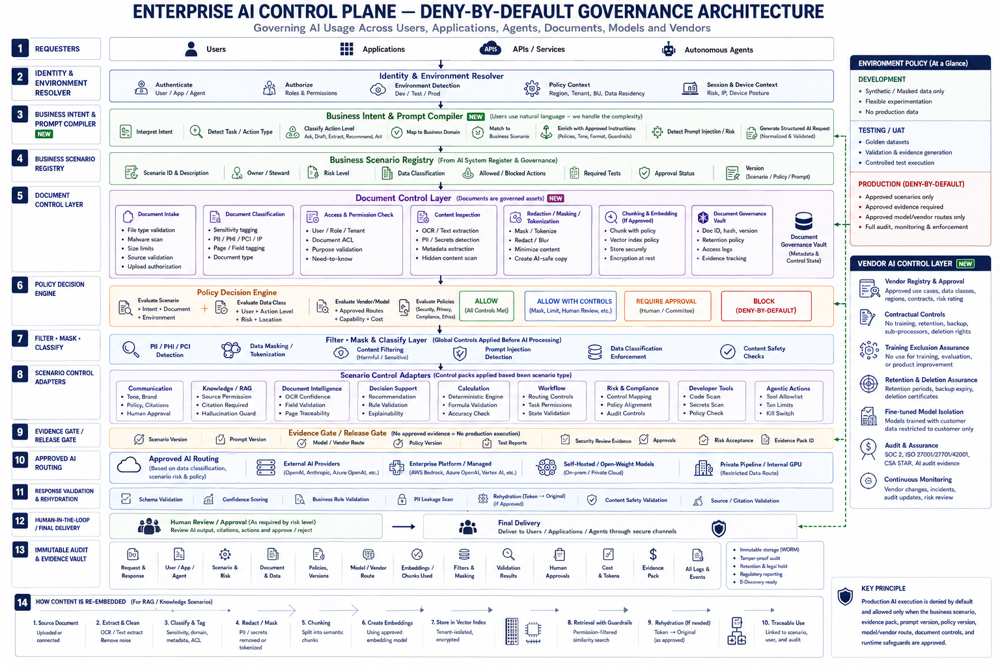

How the Enterprise AI Control Plane Works
The control plane applies deny-by-default governance to every AI request before it reaches an internal or third-party model. It validates the requester, identity, role, business purpose, approved scenario, data classification, document permissions, model eligibility and required approval level.
The prompt compiler interprets generic user requests and converts them into structured, policy-compliant prompts. Users can interact naturally while the platform applies approved instructions, business context, security controls and scenario-specific requirements.
Uploaded PDFs, Office documents, images, emails and other files are inspected for sensitive data, malware, prompt injection, access restrictions, retention requirements and regulatory obligations. Information may be masked, tokenized, encrypted, removed or blocked before model processing.
Approved requests are routed only to authorized models, tools, regions and service providers. Responses are validated for hallucination, grounding, sensitive-data leakage, policy violations, confidence thresholds and human-approval requirements.
Every prompt transformation, policy decision, document action, model call, response, approval and vendor interaction is captured in the evidence vault. When a controlled source changes, obsolete vectors are removed and approved content is reclassified, re-chunked and re-embedded with version and access-control traceability.
What this architecture enforces
All AI traffic enters the control plane
Users, applications, APIs, services and autonomous agents do not call models directly. Every request is resolved through identity, environment, session, device posture, tenant and policy context.
Business Intent & Prompt Compiler
The platform classifies task and action type, maps the request to a business domain, enriches approved instructions and detects prompt injection before generating a structured AI request.
Business Scenario Registry
No approved scenario means no production execution. Each scenario stores owner, risk level, data class, allowed and blocked actions, tests, approval status and versions.
Document Control Layer
Intake, classification, permission checks, inspection, redaction, masking, tokenization, chunking, embedding and metadata evidence are governed before AI use.
Policy Decision Engine
The engine can allow, allow with controls, require approval or block. Production requires approved scenarios, evidence, routes, monitoring and safeguards.
Vendor AI Control Layer
Third-party calls require registry approval, no-training clauses, retention and deletion assurance, model isolation, audit evidence, monitoring and exit controls.
Runtime layers from the visual
| Layer | Purpose | Enterprise control |
|---|---|---|
| Identity & Environment Resolver | Determines who is asking, from where and under which environment. | IAM, RBAC/ABAC, tenant, session, device and Dev/Test/Prod controls. |
| Business Intent & Prompt Compiler | Turns generic chat into a governed structured request. | Intent classification, prompt template, action risk and injection detection. |
| Business Scenario Registry | Registers why AI is used and what it may do. | Owner, risk tier, data class, allowed actions, tests, approvals and versions. |
| Document Control Layer | Controls documents and transformations. | PII/PHI/PCI detection, ACL checks, redaction, masking, tokenization and governance vault. |
| Policy Decision Engine | Decides whether a request is allowed, controlled, escalated or blocked. | Allow, allow with controls, require approval or block. |
| Filter · Mask · Classify | Applies global controls before processing. | Data minimization, tokenization, filtering, safety and prompt-injection checks. |
| Scenario Control Adapters | Applies scenario-specific controls. | Communication, RAG, document intelligence, decisions, workflows, developer tools and agents. |
| Evidence / Release Gate | Prevents production execution without evidence. | Scenario, prompt, policy, model, vendor, test, security, approval and risk evidence. |
| Approved AI Routing | Routes only to approved AI paths. | External providers, managed platforms, self-hosted and private models. |
| Response Validation & Rehydration | Checks output before delivery. | Schema, confidence, business rules, leakage scan, citation and rehydration controls. |
| HITL / Final Delivery | Routes high-risk or low-confidence output to people. | Human review, approval workflow and secure delivery. |
| Immutable Audit & Evidence Vault | Records decisions and artifacts. | Request, user, scenario, document, policy, route, embedding, validation, approval, cost and logs. |
Scenario implementation patterns
General and assisted interaction
Approved models, default prompt re-engineering, DLP, grounding, output validation, user disclosure and accountable human ownership.
Document Understanding pipeline
Secure intake, malware checks, OCR/ICR, classification, extraction, confidence, business rules, HITL, evidence and downstream export.
Controlled enterprise knowledge
Approved sources, source ownership, versioning, permissions, effective dates, access-aware retrieval, citations and re-embedding.
Human-accountable decisions
Explainability, qualified human approval, outcome monitoring, challenge, recourse and decision reconstruction.
Tools and state-changing actions
Agent identity, approved MCP servers, tool authorization, schema validation, transaction limits, approvals, rollback and kill switch.
Delegated and orchestrated execution
Inter-agent identity, delegated authority, orchestration boundaries, loop detection, shared-state control and continuous assurance.
Dynamic SOP and operational knowledge change
An agent operating in a continuously changing business environment must determine which approved instruction applies, when it became effective and whether it is authorized to act on it.
How controlled content is re-embedded
Embedding is treated as a controlled data-movement and behaviour-change event. Source documents are extracted, cleaned, classified, tagged, redacted or masked, chunked, embedded using an approved model, stored in a tenant-isolated vector index, retrieved with guardrails and traced to the scenario, user and audit record.
Production readiness evidence
Architecture evidence
Approved architecture, data flow, threat model, control mapping, vendor review and risk assessment.
Verification evidence
Functional, security, privacy, adversarial, performance, retrieval, regression and rollback testing.
Run and support evidence
Ownership, monitoring, support, incident playbooks, DR, access review, change control and retirement plan.
Connection to Agentic AI Governance
The Agentic AI Governance Framework defines what autonomous systems must control. This implementation framework shows how those requirements become executable architecture across prompts, documents, models, vendors, agents, MCP tools, evidence gates, validation, human approval, monitoring and immutable audit.